＼未経験歓迎！質問だけでもOK！／
LINEで今すぐお仕事体験に応募する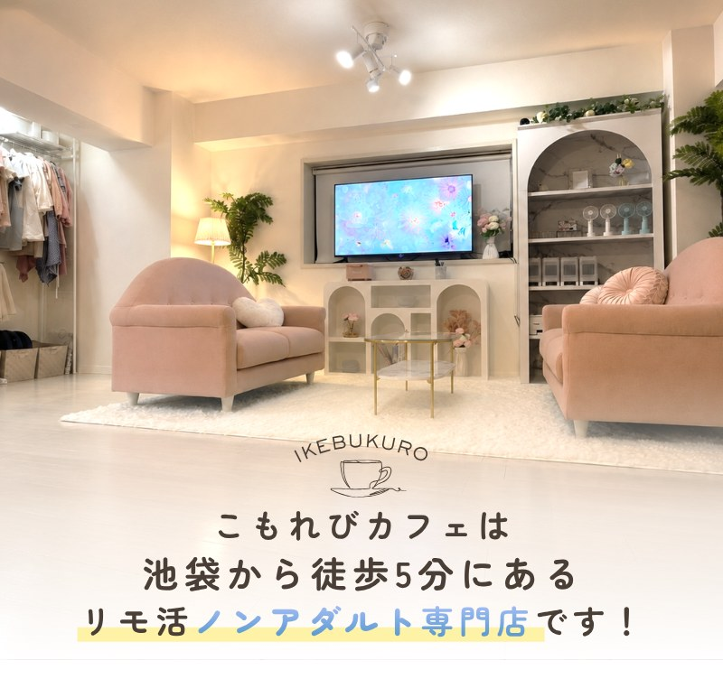
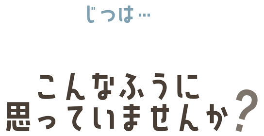
▼好きなコスメも気になる洋服も、ずっとほしいものリストに残ったまま
推し活だってお財布を気にせず遠征したい
接客バイトは気になるけど、会話に自信がない
ガルバやコンカフェも試したけど正直そこまで稼げなかった
リモ活は気になるけど何となく怪しい…。怖い…。
こもれびカフェのリモ活なら・・・
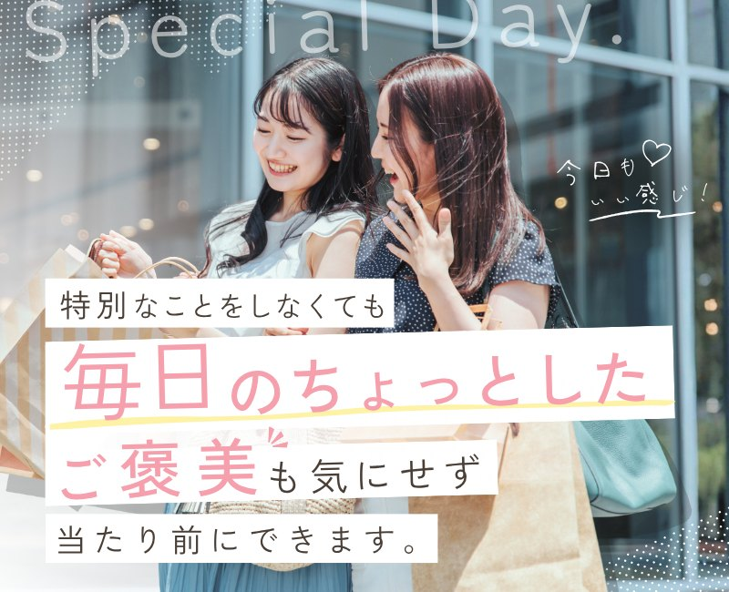
なぜなら
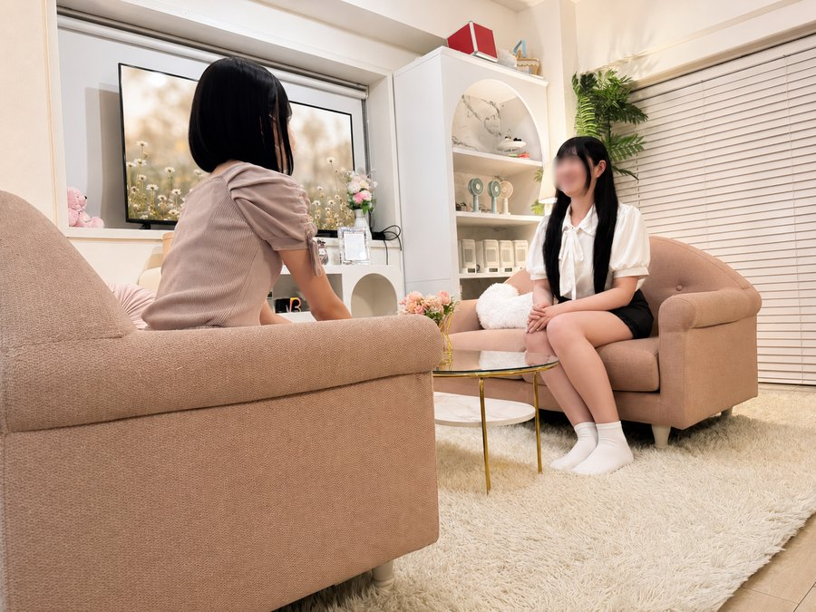
すぐそばで、ていねいにサポート慣れるまで、じっくりお教えします
稼ぐコツをお伝えできます月収300万円以上を達成し続けた元ランカーのスタッフから直接テクニックを教えてもらえます
身バレ対策にも力を入れています店舗住所は一切公開しません。接客中やプライベートの身バレ対策も万全です
そうはいっても
普段のサポートは
どうなの？
▼
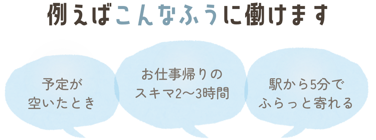
1日の過ごし方
お仕事や学校が終わった後自分の荷物を置けるスペースがあるので、お買い物帰りでもそのまま来店できます
▼
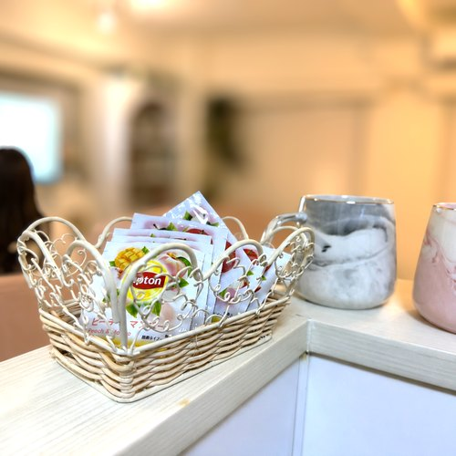
お店についたらお洋服や好きな飲み物を選びます
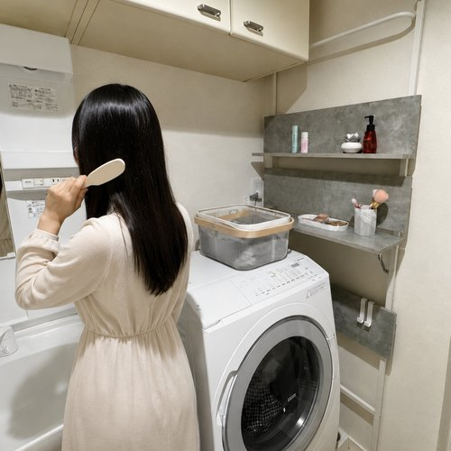
配信準備流行のお洋服が200着以上あるから選び放題。アイロンもコスメも完備です
▼
リモ活スタートスタッフさんと軽く雑談してから、気分が上がった状態でスタートします
▼
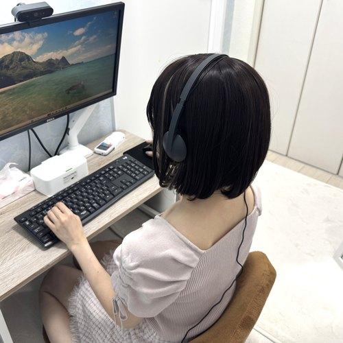
接客中困った対応があっても、スタッフからすぐにフォローが入ります
配信おわり前にできなかったことが少しずつできるようになってスタッフさんに褒めてもらえました
▼
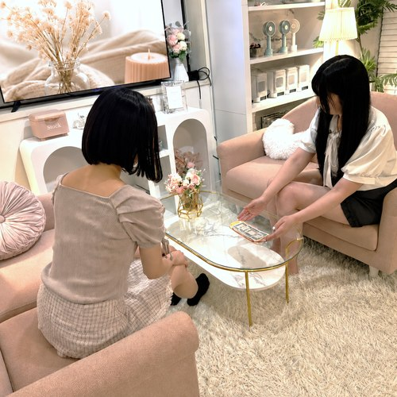
精算ご希望があれば日払いもOK。今月は頑張ったから、自分にご褒美もできそうです
＼ 気になってきたら ／
LINEで相談受付中体験のご予約も承っています
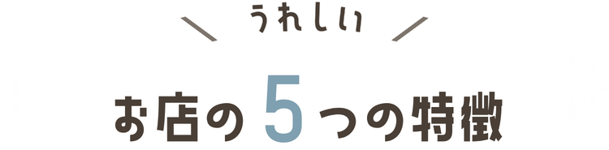
Point 1
独自ボーナス
頑張る人に還元したいので、続けていくとお得になっていきます。
Point 2
日払い・週払いOK
急な出費でも安心です。もちろん月払いも可能です。
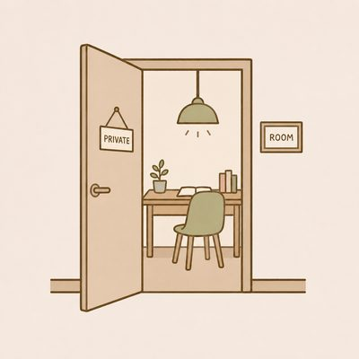
Point 3
全部屋完全個室
清潔感あり・おしゃれなルームをご用意。流行りのインテリアやかわいいぬいぐるみのルームもあります。
Point 4
安全な国内サイトを使用
お店でも対策していますが、身バレ対策やセキュリティ面を行ってくれてるサイトを厳選しているので安心してお仕事できます。
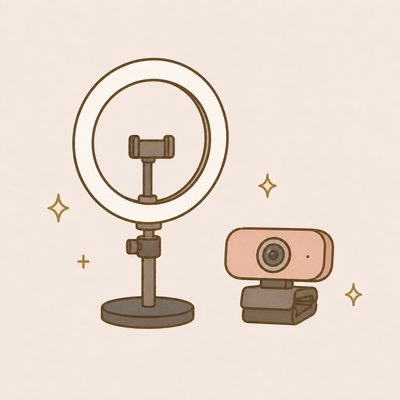
Point 5
加工アプリも使えます
４Kの高画質カメラも使ってるから、かわいくきれいに映ります。
大きなお店に引けを取らない環境を用意しています
稼ぎ方をもっと見る ▸ていねいサポートだから
みんなコツコツ積み重ねて
お店の平均時給は…
※参考｜こもれびカフェの平均時給は5,428円（2026年8月調査）
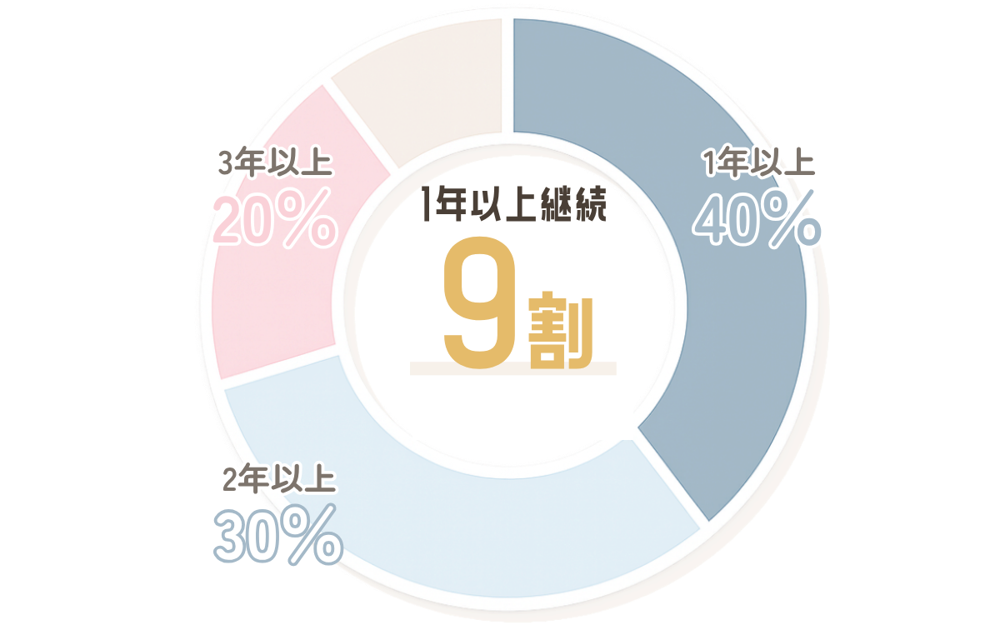
もちろん、転職の合間や卒業旅行の資金集めのために、短期間のみのキャストもいます！
なんでそんなに続いているの？
- 続く理由は人
- 私たちは「今日どれだけ稼げたか？」よりも「また明日もお店に来たいな」と思ってもらう。それを大事にサポートしてます。
- だから女の子の満足度も高いんです。
面接担当のスタッフを紹介します
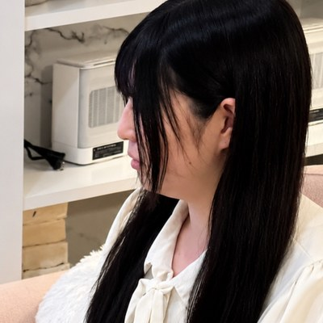
みゆ
池袋店スタッフ／じつは人見知り
- ✎ すきなもの：カフェラテ、文房具
- ✎ 得意なこと：はじめての子の"最初のひとこと"を一緒に考えること
- ✎ 女の子に言われてうれしかった言葉：「ここだと、素の自分でいられます」
こもれびカフェはスタッフがたくさんいるお店じゃないけど、1店舗のみでお家みたいな距離感だから、小さなことでも細かく気づいて、アドバイスできます。
もっとこもれびカフェのことを
知りたいって方は
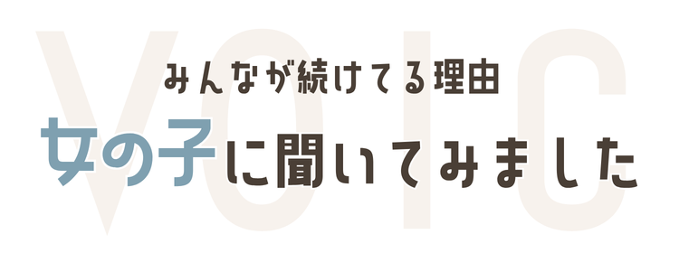
お店の中も、
のぞいてみませんか？
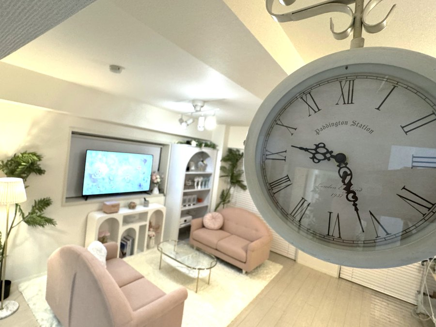
LIVINGMAKE
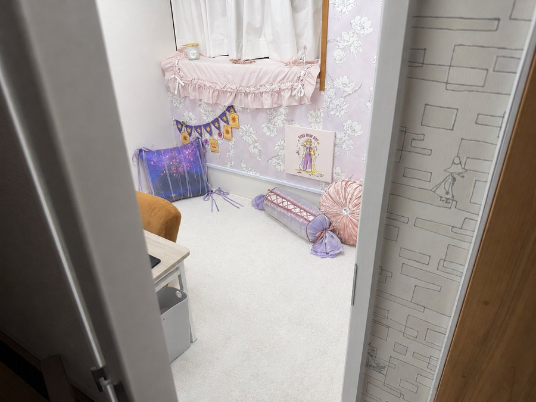
ROOM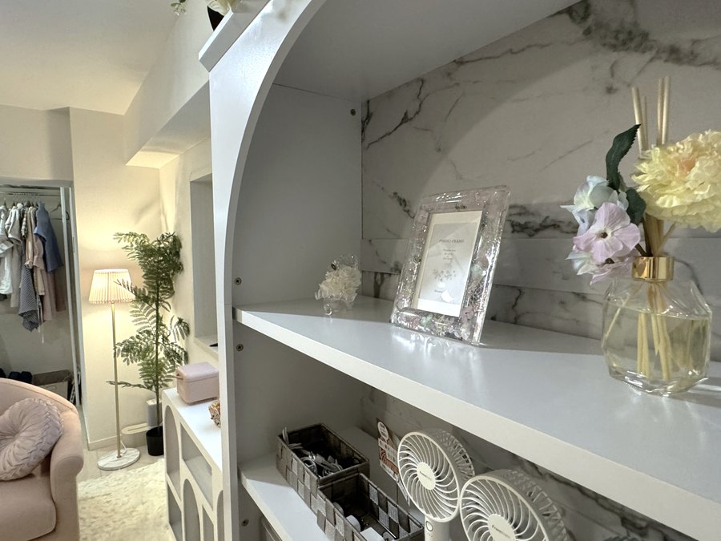
AMENITY面接までの
応募のステップ
- 01. まずはLINEに連絡※18歳未満の方はご応募できません体験のご応募でも、不安なことを相談するだけでも、どちらでもOK。
- 02. 面接の日時を決める面接したい！と伝えたら、担当のスタッフから日時のご提案をします。
- 03. 現地で待ち合わせ事務所の場所は、お店の女の子のプライバシーを守るため、直接お顔を合わせてからご案内します。
- 04. 直接ご案内します飲み物を飲みながら、簡単なカウンセリングシートを書いてもらいます。
- 05. 仕事内容をご説明業界のあれこれから配信スタイルまで、気になる疑問を解決していきます。
- 06. 質問タイム気になることは、ここで全部聞いてください
- 07. 体験希望はこちらお仕事体験の日時を決めます。最短当日OK。お洋服はお貸しします。体験に進まなくても、もちろん大丈夫です。
その日のうちに体験をする方もいますし、
ご予定に合わせて予約する方もいます。
未経験・スキルについて
未経験でも本当に大丈夫ですか？
はい。在籍の多くが未経験からのスタートです。スタッフが慣れるまでしっかりサポートします。
会話が苦手・人見知りなのですが働けますか？
はい。人見知りのスタッフも多く在籍しています。少しずつ慣れていけるようサポートします。
見た目に自信がないのですが大丈夫ですか？
高画質カメラと加工アプリをご用意しているので、映り方から一緒に工夫できます。
お給料・稼ぎ方について
平均時給はどれくらいですか？
お店の平均時給は5,428円です（2026年8月調査）。
稼げる金額に上限はありますか？
働き方によって個人差があります。高単価ジャンル・2ショットなど、稼ぎ方の一例は「稼ぎ方について」でご紹介しています。
日払い・週払いはできますか？
できます。
ボーナス制度はありますか？
独自ボーナス制度があります。頑張るほどお得になる仕組みです。
シフト・働き方について
シフトの融通はききますか？
週1日・1日2時間程度から、ご自身のペースで働けます。当日の予約も可能です。
学校やお仕事と両立できますか？
はい。掛け持ちしながら続けている在籍者もいます。
通勤ですか？在宅でもできますか？
池袋駅徒歩5分の店舗への通勤専門です。
身バレ・プライバシーについて
身バレが心配です。対策はありますか？
店舗住所は公開していません。配信スタイル（マスク着用・顔出しなしなど）もご自身で選べます。
顔出しをしたくないのですが大丈夫ですか？
マスク有・お顔出しなしなど、選べる配信スタイルをご用意しています。稼げないから選べない、ということがないようサポートします。
家族や友人にバレませんか？
【要確認：直接回答する文言はまだ確定していません】
個人情報や配信データはどう管理されていますか？
登録に必要な個人情報も、撮影した写真もきちんと管理しています。配信の録画・保存も禁止しており、勝手に使用することはありません。
身分証の提出は必要ですか？
年齢確認のため、顔写真つきの身分証を1点ご提示いただきます。年齢確認以外の目的では使用しません。
18歳未満でも応募できますか？
18歳未満の方はご応募いただけません。
サポート体制について
どんなサポートが受けられますか？
現役・元チャットレディのスタッフが、稼ぐテクニックから配信の準備まで直接サポートします。
お客様とのトラブルが心配です
困ったお客様がいたら、すぐにスタッフにお伝えください。すぐに対応します。
辞めたいときに辞められますか？
はい。無理に引き止めることは一切ありません。ご自身のタイミングでいつでも辞められます。
お店・応募について
お店の設備はどんな感じですか？
リビング、メイクルーム、配信ルーム、フード・アメニティを完備した、全部屋完全個室です。
お店の場所はどこですか？
池袋エリア、駅から徒歩5分です（詳細な住所は非公開です）。
使用しているサイトはどこですか？
大手サイトのみを使用しています。
応募から働き始めるまでの流れは？
お問い合わせ→面接のご予約→面接・カウンセリング→お仕事体験→配信→精算→お仕事デビュー、の7ステップです。
見学だけでも相談できますか？
はい、見学・ご相談だけでも歓迎しています。